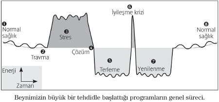
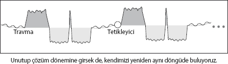

İşte geldik çok önemli bir konuya... Hayatımıza istediğimiz gibi devam edebilmemizin ön şartı olan SAĞLIĞIMIZA!
Hepimiz, sağlığımız konusunda bir şey olduğunda aslında büyük hayat dersleri alırız. Sağlığımızın ne kadar önemli olduğunu ve daha önce üzüldüğümüz konuların ne kadar da önemsiz olduğunu tecrübe ederiz.
Aslında, beynimizi “formatlayarak” çözebileceğimiz en önemli konuların başında sağlık geliyor. Eğer ülkemizde kabul edilmiş Batı tıp sisteminin kemikleşmiş dogmaları içerisinde yetişmiş ve beynin sağlığımıza olan etkisi konusuna pek de kafa yormuş biri değilseniz, bu bölümde paylaşacağım konular size “fazla” gelebilir.
Yıka Beynini! kitabımda temelleri 19. yüzyılda oluşan Batı tıbbının çok “mekanik” bir mentalite içerisinde geliştiğinden bahsetmiştim. “Küçük bir çocuk” edasıyla birbiri ardına makineler yaratan çağın bilim adamlarının, tıp konusunda da çok mekanik bir bakış açısına sahip olduğunu belirtmiştim. İşte böyle bir çağın bilimcileri vücuda da çok “komplike bir makine” olarak bakmış, makinenin parçalara ayrıldığını, parçalara müdahale ederek ya da gerekirse değiştirerek sorunları çözebileceklerini düşünmüşlerdi. Aslında “belli bir oranda” da başarılı oldular...
Ama dediğim gibi, “belli bir oranda”... Amacım tıp sistemini eleştirmek değil. Ancak hepimiz kabul etmeliyiz ki, özellikle Batı tıbbının hiçbir şekilde çözüm bulamadığı ya da vücuttaki belirtilerini hayat boyu kullanılan ilaçlarla baskıladığı birçok rahatsızlık mevcut.
Peki, ama neden tıp dünyası birçok konuda “takdire şayan” ilerlemeler kaydetse de, bazı konularda başarısız?
Aslında cevabımız çok net...
Çünkü aslında ÇOĞU HASTALIĞIN SEBEBİ BEYİN KAYNAKLI! Beyin belli nedenlerle, organları farklı çalıştırmaya karar veriyor. Aslında çoğu zaman organlar bozuldukları için hastalıklar oluşmuyor. Zaten beyin organları çeşitli biyolojik sebeplerden dolayı farklı çalıştırmaya karar veriyor. İşte bu sürecin sonucunda, organlarda fiziksel bozulmalar ortaya çıkıyor.
Asıl soru şu: Beynimiz neden gereksiz
yere sürece müdahale ediyor?
Çünkü kitabın başında bahsettiğimiz, hatta aslan karşısındaki insan örneğinde gösterdiğimiz gibi beynimizin tepkileri çok eskilerden kalma. Evrim sırasında geliştirilen tepkiler sadece o dönemin ihtiyaçlarını karşılıyor.
Mesela, henüz evrim sırasında su ortamında yaşarken beynimiz tarafından geliştirilen tepkiler aslında o döneme ait ve hâlâ beynimizde mevcutlar. Evet, insanoğlu olarak biz çoktan sudan çıktık (tabii bu kitabı Bodrum sahillerinde plajda okuyorsanız “Hayır çıkmadık” diyebilirsiniz). Ama beynimiz hâlâ milyonlarca yıl öncesinden kalan eski tepkileri vermeye devam ediyor. Tabii ki üzerine eklenmiş çok daha gelişmiş ve çok daha güncel tepkilerle beraber.
Madem “format” atıyoruz, yine bilgisayar örneğinden gidelim. Çeşitli zamanlarda yazılım şirketleri yazılımlarını baştan aşağı yeniden yazarlar. Zira 30 sene önce yazılan bir programın üzerine yeni güncellemeler eklemek hem zordur, hem de işleri çok yavaşlatır. Sonuçta 30 sene önce yapılan bir yazılım, günün şartlarını tam hesap edemez.
Aslında, beynimizdeki en önemli sorun da bu. Beynimizdeki bizi hayatta tutan tepkiler, hiçbir zaman baştan yazılmamış. Hatta hiçbir şey de silinmemiş. Milyonlarca yıl boyunca sadece yavaş yavaş güncellenmiş.
Güncel tepkilerimizle, milyon yıl öncekiler aynı yazılım içerisinde... Hem muazzam hem de “kaotik” bir düzen!
Bu bölüm biraz “felsefik” kaçmış olabilir. Ancak, sağlığımızı ele alırken, vücudumuzun tepkilerini anlamak için, onların bu şartlar için yazılmadığını bilmek, kaotik düzenin mantığını anlamak gerekiyor.
Yas, ayrılık acısı, böbrekler!
İşte size ilginç bir örnek: Bir yakınını kaybeden ya da kendini çok yalnız hisseden birinin böbreklerinin daha fazla su tutması, böylece kişinin kilo alması işte tam da böyle bir tepki. Topluluk halinde çorak coğrafyalarda avlanarak “geçinip giden” atalarımızdan kalma...
Böyle bir topluluktan herhangi bir sebeple ayrılmak zorunda kalan bir üyeyi bekleyen en büyük tehlike susuzluktan ölmek olmuştur. İşte beynimiz, o dönem şartlarına göre terk edilen kişinin “susuzluktan ölmemesi” için vücutta mümkün olduğu kadar su tutma tepkisini geliştirmiş.
Sağlığımızı stres mi bozuyor?
Mevcut tıp sistemi, stresin sağlığımıza nasıl zararlı olduğunu, organları bozduğunu, hastalıklara sebep olduğunu söyler durur. Hatta artık neredeyse her hastalığın sebebinin stres olduğu konusunda tıp dünyası kendi içinde genel bir “anlaşma” sağlamış durumda.
Acaba bu ne kadar doğru? Stres gerçekten sağlığımızı, organlarımızı bozuyor mu?
Yanıt, “bir anlamda” evet! Ama dolaylı olarak. Şimdi beynimizin algıladığı tehditlere, bir başka deyişle “stresin kaynağına” tepki verme mantığını ele alalım.
Beynimizin oluşturduğu programlar
Beynimiz özellikle önemli gördüğü, yaşadığımız tehditler karşısında bize yardımcı olmak için küçük “programlar” oluşturuyor.
Bu küçük programlar yani beynimiz tehlikelere verdiği tepkilerin aslında iki ana aşamada incelenmesi mümkün.
• Stres dönemi (tepki)
• Çözüm sonrası (normale döndürme)
Şimdi süreci bir grafikle anlatıp, biraz daha detaylandıralım ve aslında beynimizin ne yaptığını inceleyelim...

1- Sağlıklı bir şekilde yaşamımıza devam ediyoruz.
2- Hayatımızda hiç beklemediğimiz, dramatik, çözüm stratejisi oluşturamadığımız, özellikle bu sırada kendimizi yalnız hissettiğimiz bir travmatik olay yaşanıyor.
Burada hepimizin başımıza gelebilecek travmalardan bahsediyorum. Belki 5 saniye süren bir trafik kazası ya da 1 saat süren çok utandığımız bir olay.
Ne tür tepki verdiği, yaşanan kötü olayın özelliklerine ve de beynin anlık olarak o olayı nasıl algıladığına göre değişiyor.
Eğer beynimiz bir program başlatmaya karar verirse, bunu 3 farklı düzeyde yapıyor.
• Psikolojimizde
• Fiziksel olarak beynimizde
• Fiziksel olarak ilgili organda
Beynimiz bir yandan olay tekrarlanırsa kendini savunmaya almak için çevrede olan bütün duyusal bilgileri çok kısa bir süre içerisinde kodluyor. Görüntüleri, sesleri, hisleri, kokuları, belki tatları ve o an aklımızdan geçen kelimeleri... Bunu yaparken kodladığı sinyallere daha sonra tepki verebilmeyi amaçlıyor.
3- Tehlikenin aktif olduğu bölümde:
Psikolojimiz: Travmatik olayın bilincinde bize çözüm bulmamız adına fazla enerji sağlıyor. Geceleri uykusuz kalıyor, farkında olmasak bile hep bu olayı düşünüyoruz.
Beynimiz: Beynimizde içinde duygu ve travma anındaki bilgilerin bulunduğu fiziksel bir program oluşturuluyor.
Organımız: Beyin eşzamanlı olarak kendi “mantığı” içerisinde belli bir ya da birkaç organda çözüme yardımcı olacak değişiklikler yapıyor. Yapılan değişiklikler bilinçaltının travmayı yorumlamasına göre durumdan duruma değişiyor.
4- Bilinçaltımız travmatik durumun çözüldüğüne kanaat getiriyor. (Bazen çözüm sorundan kaçarak, bastırarak da gerçekleşebiliyor.)
5- Çözüm sonrası vücudumuz daha önce yapılan değişiklikleri normale döndürme sürecine giriyor. Bu süreçte sıcak terlemeler, yorgunluk yaşanıyor. Yatağımızdan yorgun bir şekilde kalkarken, aslında vücudumuz normale dönme sürecini yaşıyor.
Psikolojimiz: Sorunu çözdüğümüz ya da en azından kaçtığımızda rahatlıyor ve yorgun düşüyoruz.
Beynimiz: Beynimizin ilgili bölümünde iyileşme sağlanması için ödem oluşuyor.
Organımız: Aslında vücutta genel kural olarak iyileşme sağlanması için sıvı ortamı yaratılıyor. (Mesela, iyileşen bir kemiğimizin önce şişmesi gibi). Vücut ısımızın yükselmesi, terleme, ateş, ağrılar bu dönem yaşadığımız belirtilerden bazıları. Tüm bunlar, iyileşme sağlanması için gerekli sıcak sıvı ortamının yan etkileri. Beynimizde ve ilgili organımızda eğer sıvı seviyesi çok yükselirse, sıvının yarattığı baskıdan dolayı ağrılarımız çok artabiliyor.
6- Yorgun vücutta enerjinin yükseldiği, ama özellikle ağrıların arttığı bir iyileşme krizi yaşanıyor. İyileşme krizi yaşamamızın birçok nedeni var. Öncelikle, bu bölümde vücudumuz eski sorunsuz halimize dönmeden, stres dönemini ve sorunu kısa bir süre tekrar yaşatarak “test” yapıyor. Diğer önemli nedense, bir önceki dönemde beyinde ve ilgili organda bulunan sıvıları hızlı bir şekilde vücuttan atmak.
Psikolojimiz: Bu bölümde tekrar stresliyiz. Beynimiz sorunu bize tekrar yaşatıyor. Endişe hali, soğuk soğuk terleme, mide bulantısı iyileşme krizinde yaşanan belirtilerden bazıları.
Beynimiz: Beynimizdeki iyileşme döneminde kullanılan fazla sıvılar bu bölümde hızlı bir şekilde atılıyor. Baş ağrılarının en büyük bölümü, iyileşme krizinde yaşanıyor.
Organımız: İlgili organımızda da beynimize benzer bir süreç yaşanıyor. İlgili bölümden sıvı dışarı atılıyor. Vücutta sivilce patlaması, hapşırmak, öksürmek gibi birçok durum aslında iyileşme krizinin sonuçları.
7- Vücut tekrar yorgunluğun yaşandığı, ama terlemenin bittiği yenileme sürecine giriyor.
Psikolojimiz: Yine yorgun ve rahatız. Yine rahat rahat dinleniyoruz.
Beynimiz: Beynimizdeki ödem atılmış, artık iyileşmeye hazır.
Organımız: Organımız da iyileşmeyi yaşamak üzere...
8- Yenileme sürecinin sonunda sağlığımıza kavuşuyoruz.
Evet, ortam biraz biyoloji dersine döndü biliyorum... Ama yeri geldiği zaman bu bilgileri kullanacağız.
Programlar ne zaman başlıyor?
Beynimizin bu programcıkları başlatmasının belli kriterleri var. Bunlar:
• Olayın yeterince dramatik ve kötü olması
• Gerçekleştiği an kendimizi yalnız hissetmemiz
• Aniden, hiç beklemediğimiz şekilde gerçekleşmesi
• Hiçbir çözüm stratejimizin olmaması
Bazı programlar başlayıp bitiyor
Bazı programlar zaten doğal olarak başlıyor ve doğal bir süreç vücut tarafından tüm evreler yaşanarak tamamlanıyor. Bunlar için hiçbir şey yapmamıza gerek yok.
Mesela, bir yakınınızın sağlığıyla ilgili sorun yaşadığını ve sizin daha kötü bir şey olmasından korktuğunuzu ve çok üzüldüğünüzü düşünelim. Özellikle bu durumun bir “şok” şeklinde yaşandığını ve kendinizi tamamıyla “aciz” hissettiğinizi varsayalım.
Tüm bu sıkıntılı sürece rağmen, belli bir süre telaş yaşadıktan sonra korkulanın olmadığını ve yakınınızın tamamıyla sağlığına kavuştuğunu, hatta eskisinden de güçlü kuvvetli olduğunu düşünelim.
Hepimiz böyle dönemlerde vücudumuzda bazı sorunlar yaşayabiliriz. Ancak, sorun tamamıyla beynimizde çözüldüğü için (yakınınız olan kişinin sağlığının eskisinden de iyi olduğunu ve yeniden böyle bir şey yaşaması korkumuzun olmadığını varsayıyoruz) yaşadıklarımız yukarıda bahsettiğimiz süreci takip edecek ve her şey tamamıyla eski haline dönecektir.
Bazı programlar çözüm olmadan sürekli kendini tekrar ediyor
Peki, ya yakınımızın sağlığı tam olarak düzelmezse, ya onun her an daha kötü bir şey yaşama korkusunu sürekli hissetmeye başlarsak?
İşte o zaman “kronik” bir durumla karşı karşıyayız demektir...

Biz bu kitapta, kronikleşmiş sorunları temizlemeyi amaçlıyoruz. Eğer, ana olayların yarattığı tehdidi “formatlamayı” başarabilirsek, kronik durumları da tamamıyla temizleyebiliriz.
Pozitif olmak güzel ama geçmişi temizlemiyor!
Hayatımızda neden hem pozitif hem de paylaşım içinde olmamız gerektiğini bu bölümde daha iyi anlayacaksınız. Ve büyük travmaları özellikle yalnız geçirenlerin başına ileride sağlık sorunlarının neden daha sık geldiğinin yanıtını da bulacaksınız...
Ancak, mevcut sorunlarımız hakkında pozitif olmak yeni travma ve programların oluşma ihtimalini azaltsa da, bu bizim için yine de yeterli değil. Çok geçmişte yaşanan olaylar bugün için çoktan önemlerini yitirseler de, beynimizde takılı kalabiliyorlar.
Hatta biraz önceki örnekten devam edersek, hasta olan kişinin sağlığı eskisinden de iyi olsa da, beynimiz bizim bu dönemde yaşadığımız travmaları tamamıyla temizlemeyebilir. Yakınımız olan kişi tamamıyla iyileşse de, bize o dönemden “miras kalanlar” hayatımız boyunca bizi rahatsız etmeye devam edebilirler. Onun tekrar aynı durumları yaşaması korkumuz, geçmişte yaşadığımız travmatik programları tetikleyerek bizim sürekli kronikleşen rahatsızlıkları yaşamamızı sağlayabilir.
Mucizelerin sınırı yok!
Aslında, beynimizin sağlığımızdaki etkisi ve “bütüncül” tıbbın (beyinle vücudu beraber değerlendiren tıp anlayışı) önemi her geçen gün daha iyi anlaşılıyor. Zaten, Batı tıbbında da son yıllarda neredeyse tüm hastalıkların ana nedeni olarak “stres” gösteriliyor.
Ancak, hastalıkların nedenini stres olarak göstermek, süreci pek de anlayamadığımız anlamına geliyor. Rahatsızlıkları yaratan aslında stres ve stresin vücudu bozması değil! Asıl neden, beynimizin tehdit algısı ve kendisinin verdiği, milyonlarca yıl öncesi için doğru ama şu an için yanlış kararlar.
Eğer, beynimizin hayatımızın hangi döneminde bu kararları aldığını bulabilirsek, aslında sağlığımız konusunda yaşayabileceğimiz mucizelerin sınırı yok. (Aslında konu daha iyi anlaşıldıkça olayın mucize olmadığı, gayet basit mantık kuralları içinde “bilimin ta kendisi” olduğu da çok net olarak görülecektir.)
Tüm bunların ışığında asıl konu TEŞHİS...
Hayatımızın tümünü temizleyemeyiz. Ama eğer spesifik bir rahatsızlığımız varsa, bunu beynimizin yaşadığımız hangi olaya istinaden yarattığını bulursak, temizleme ihtimalimizin de hiç az olmadığını söyleyebilirim.
Bu başlı başına çok uzun ve detaylı bir konu. Hatta ilerleyen yıllarda bu konuda paradigmaları değiştireceğini düşündüğüm kitaplar da yazmayı planlıyorum. Şu ana kadar birçok konuyu ana hatlarıyla ele alarak, bu konuları nasıl “formatlayacağımızı” gördük. Ancak, bu kitabın içeriği bakımından sağlık konusunu dar tutmayı, sadece çok yaygın bazı rahatsızlıkları, nedenlerini fazla incelemeden NeuroFormat® sistemiyle nasıl çözebileceğimizi paylaşmak istiyorum.
Beynimiz neden yanlış kararlar veriyor?
Aslında ANLIK TEHDİTLERE, organsal bazda anlık tepkiler vermek tüm hayvanlarda oldukça doğru sonuçlar ortaya çıkarıyor. Zira onların sorunları da “anlık”.
Ancak, insanoğlunun beyni ve yaşamı karmaşık hale geldikçe, çekirdekte koşan biyolojik programların önemli bir bölümü de anlamlarını kaybetmişler. Normalde saniyeler içinde başlayıp bitmesi gereken programlar, konular karmaşıklaştıkça aylar yıllar sürmüş.
Aslında beynimizin yanlış yapmasının en büyük nedeni de bu... Yani ZAMAN...
Kısa bir anda verilmesi gereken tepki, aylara yıllara uzayınca tepkiler tamamıyla yanlış hale geliyor ve gereksizleşiyor.
Bilinçaltımızın yaptığı diğer önemli hata, sorunları çok basite indirgeyerek, aslında karmaşık ve SOYUT KONULARA çok basit ve SOMUT TEPKİLER vermesi.
Mesela, kendi kurduğu firması iflas etme tehlikesi geçiren birinin bilinçaltı, “iş”, “güç”, “firma”, “internet”, “para” gibi kavramlardan aslında pek de anlamıyor. Bilinçaltı tarafından tehlike yaşanan alan gibi çok temel konular şeklinde algılanıyor. Böyle bir tehlike ya da iflas yaşayan kişinin bilinçaltının başlattığı program “çocuğunun tehlikede olması”, “bölgesinin tehlikede olması” gibi temel programlar olabiliyor.